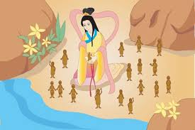

世界最初如同一顆大雞蛋，混沌不分。盤古在寂靜中醒來，用一柄大斧劈開了永恆的黑暗。輕清者上升為天，重濁者下沉為地。盤古頂天立地一萬八千年，直到生命耗盡的那一刻，他將自己的身軀化作了我們如今看見的萬物。
他的呼氣成了風雲，雙眼化作日月，四肢五體則變成了大地名山。甚至連最微小的汗毛，也化作了點綴大地的花草樹木。
女神女媧在山水間遊歷，雖然景色瑰麗，卻因為少了生靈的氣息而感到寂寞。她坐在池塘邊，看著水中倒映的影子，心中燃起了創造的渴望。

圖說：女媧依照自己的形貌，在池畔捏製出最初的人類
她用黃泥捏出了精緻的泥人，當泥人踏上土地的一瞬，奇蹟發生了——他們獲得了生命，歡快地跳動起來。為了讓人類佈滿大地，女媧更以藤條揮灑泥漿，讓無數小人如星火般散佈在原野之上。
然而和平並非永久，水火二神的爭鬥震碎了天空。支撐天地的「不周山」應聲斷裂，半邊天塌陷，黑火與洪流席捲大地。人類陷入了前所未有的地獄災難。
女媧不忍看子孫受苦，她燒煉五彩石填補天窟，斬下老龜四足重立天柱。她不僅修復了自然，更重新燃起了人類對生活的希望與歌聲。
當一切歸於平靜，女媧悄然離開了人間。但傳說中，她的意志化作了十位神人，守護在廣闊的原野上，生生世世守護著她親手創造的這群子民。